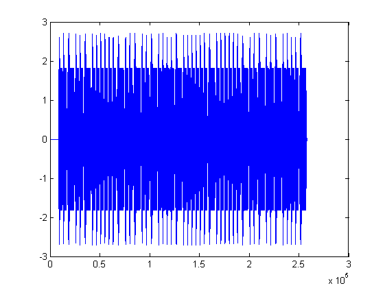
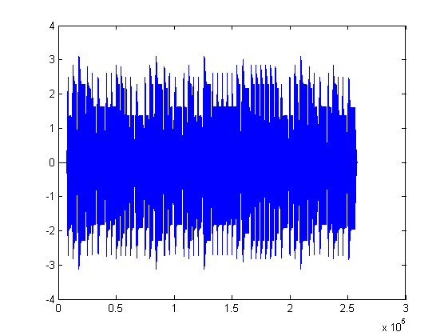
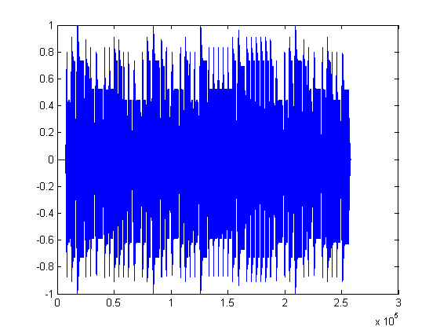

[nota,b,c]=textread('notalar.txt','%s %s %s');
fs=8192;
ds=round(fs/100);
go=round(fs/10);
notalar=zeros(1,fs);
a=zeros(1,length(notalar));
durak=zeros(1,ds);
for i=1:(length(nota))
oktav((i),1)=str2num(cell2mat(b(i,1)));
vurus((i),1)=str2num(cell2mat(c(i,1)));
frekans((i),1)=frek(nota((i),1),oktav((i),1));
[x,t]=note(frekans((i),1),vurus((i),1));
notalar=[notalar durak x];
end
plot(notalar)

notalarecho=zeros(1,(length(notalar)));
for i=1:(length(notalar))
f=(go+i);
if f<(length(notalar))
notalarecho(i)=notalar(i)*0.3+notalar(f);
else
notalarecho(i)=notalar(i)*0.3+0;
end
end
plot(notalarecho)

normalizenotalarecho=zeros(1,(length(notalar)));
normalizenotalarecho=notalarecho/max(abs(notalarecho));
plot(normalizenotalarecho)
sound(normalizenotalarecho)
